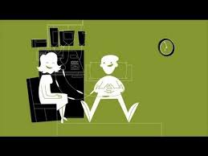

Step 3: Today's the Day! You are becoming a Hero! All you have
to do is sit for 4 or 5 hours, reading, watching television, or
chatting to your friend while you are hooked up to a machine. The
machine does all the work; taking blood from one arm, filtering it to
remove the stem cells and then returning the filtered blood to your
other arm.

Step 4: If at the end of the 4 or 5 hours, we have collected
enough stem cells then you can head home; however, if we haven't been
able to collect enough, then we give you another injection and get you
and your companion back the next day to do it again.